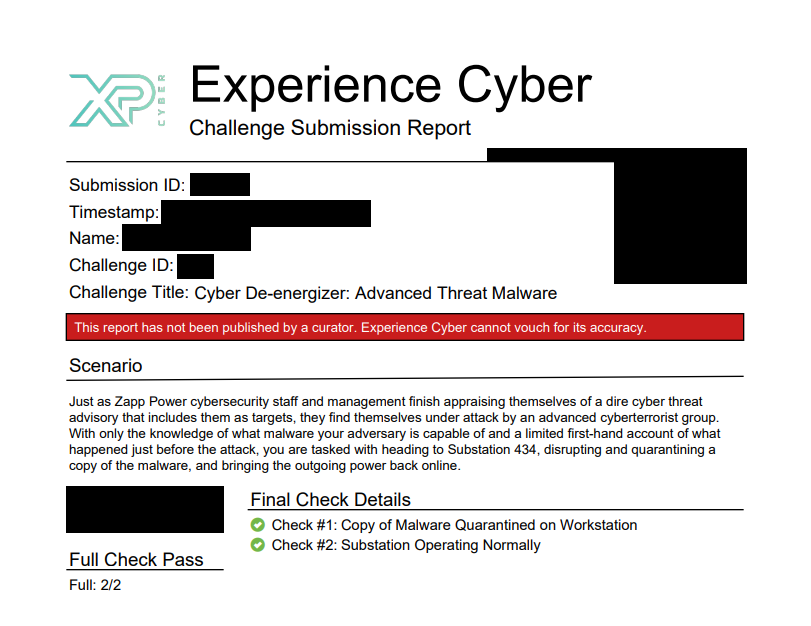
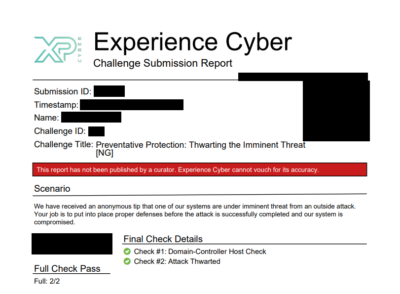
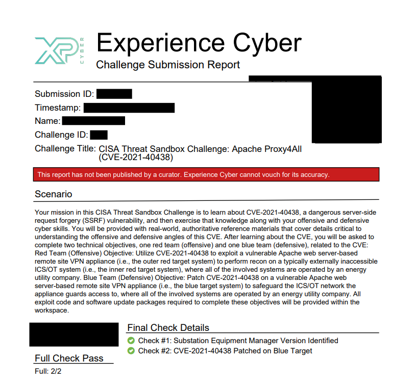
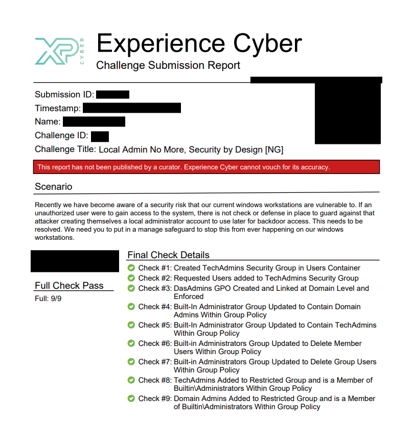
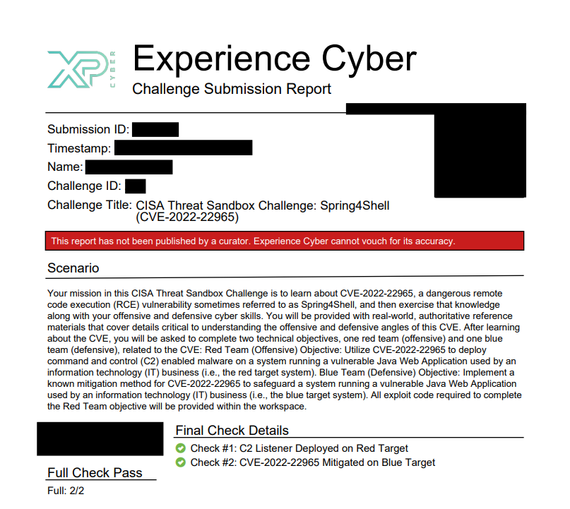

Labs
Hands-on exercises focused on repeatable workflows, investigation, and skill development. These are lab-style activities (not full project ownership), documented for portfolio evidence.
SOC & Incident Response Labs
Deeper write-ups and evidence-based deliverables are documented on the Projects page.
Incident Response Workflow Lab (detect → triage → contain → document)
- Practiced IR flow: initial detection signals, scope/impact assessment, containment actions, and recovery planning.
- Documented findings in a clear analyst style: indicators, affected hosts/users, timeline, and recommended next steps.
- Focused on “tell the story with evidence” — what happened, why it matters, and what to do now.
Windows Log Hunting Lab (Event Viewer)
- Reviewed Windows Security logs to identify abnormal authentication activity and suspicious user behavior.
- Mapped findings to common attacker behaviors (failed logon bursts, privilege changes, unusual logon types).
- Practiced concise reporting suitable for SOC escalation or ticket notes.
IOC Identification Lab (structured logs / datasets)
- Extracted and validated indicators (domains, IPs, hashes) and correlated related events.
- Built a short incident narrative supported by evidence (what/when/how often).
- Recommended actions: block/monitor, detection tuning, and follow-on investigation pivots.
TryHackMe — SOC / Blue Team Rooms
- Completed SOC-focused labs reinforcing alert triage, investigation thinking, and fundamentals.
- Strengthened analyst habits: verifying assumptions, documenting evidence, and communicating clearly.
Network & Security Testing Labs
Network Traffic Analysis Lab (PCAP triage)
- Wireshark PCAP analysis to identify ports/services, suspicious patterns, and potential beaconing behavior.
- Protocol review (TCP, UDP, DNS, HTTP/HTTPS) and stream reconstruction where applicable.
- Conversation/statistics views to establish baselines and spot anomalies quickly.
Wireless Security Lab (WPA2 — owned network)
- Captured a WPA2 handshake in a controlled environment to validate Wi-Fi credential strength.
- Performed an offline password audit using Kali Linux tooling and GPU-accelerated cracking with Hashcat.
- Documented security takeaways and recommended mitigations such as stronger passphrases and modern Wi-Fi standards (WPA3), based on observed weaknesses.
Recon & Vulnerability Scanning Lab (owned network)
- Nmap discovery + service enumeration to validate exposed services and reduce unknowns.
- Nessus Essentials scanning for common misconfigurations and patch gaps (lab scope).
- Converted findings into prioritized remediation notes (risk, impact, and quick fixes).
Digital Forensics Labs
File System Forensics Lab (NTFS / exFAT)
- File system and artifact analysis using FTK Imager and hex editors.
- $MFT / metadata interpretation (timestamps, attributes, allocation status) and timeline reconstruction.
- Evidence handling habits: integrity-minded documentation and repeatable steps.
Cyber Range & CISA Threat Sandbox Challenges
Scenario-based challenges and CTF-style environments used to practice investigation, response, and technical problem solving.
XP Cyber Range (NIST-aligned scenarios)
These challenges are summarized to demonstrate technical understanding without publishing step-by-step exploitation details. Digital copies of my professional documentation are maintained separately, including penetration test-style reports for the CISA Threat Sandbox challenges, and can be discussed or reviewed in an interview setting.
Cyber De-energizer: Advanced Threat Malware
Challenge Summary: This scenario focused on responding to a malware-related incident in an ICS-style environment where availability and operational recovery were key concerns. The challenge required understanding the impact of malicious activity, making containment decisions, and validating that affected operations were restored safely.
Skills Applied:
- Practiced incident response thinking in an operational technology-style environment.
- Balanced containment actions with the need to restore normal system operations.
- Validated recovery by confirming the malicious activity was addressed and the affected operation returned to a normal state.
- Documented the outcome in a way that explains the security issue, response actions, and final validation without exposing sensitive procedural details.
Documentation: A digital copy of the completion report and supporting notes is maintained separately. Public evidence is limited to a redacted completion screenshot to avoid exposing unnecessary lab details.
Evidence:

Preventative Protection: Thwarting the Imminent Threat (NG)
Challenge Summary: This scenario focused on preventing an imminent security threat by applying defensive controls before the attack could succeed. The challenge reinforced the importance of hardening systems proactively, validating security settings, and reducing exposure before an incident becomes active.
Skills Applied:
- Applied preventative security controls to reduce the system’s attack surface.
- Practiced defensive decision-making focused on stopping an attack before impact.
- Validated that the applied controls addressed the threat condition and improved the system’s security posture.
- Connected technical hardening actions to real-world risk reduction and operational protection.
Documentation: A digital copy of the completion report and supporting notes is maintained separately. Public evidence is limited to a redacted completion screenshot to avoid exposing unnecessary lab details.
Evidence:

CISA Threat Sandbox: Apache Proxy4All
Challenge Summary: This CISA Threat Sandbox scenario focused on understanding and responding to an Apache-related server-side request forgery vulnerability. I researched how the vulnerability could allow unintended internal requests, validated the issue in a controlled lab environment, and confirmed that remediation reduced the exposure.
Skills Applied:
- Researched the vulnerability behavior, affected service, and security impact before testing.
- Validated the issue in a controlled environment without publishing step-by-step exploitation details.
- Used service/version awareness to understand whether the system was exposed or remediated.
- Connected the technical finding to real-world risk, including internal service exposure and unauthorized request paths.
- Documented the assessment in a penetration test-style format with scope, objectives, findings, impact, and remediation guidance.
Documentation: A digital copy of my penetration test-style documentation for this challenge is maintained separately. The public portfolio includes only a high-level summary and redacted completion evidence to avoid exposing unnecessary technical details.
Evidence:

System Administration: Security by Design
Challenge Summary: This scenario focused on applying security-by-design principles to Windows servers. The challenge reinforced how design choices, system configuration, and risk analysis can reduce exposure before vulnerabilities become active security incidents.
Skills Applied:
- Reviewed the environment from a prevention-focused security perspective.
- Identified weaknesses that could increase risk if left unaddressed during system design or deployment.
- Applied secure server configurations to reduce exposure and improve the overall security posture.
- Connected technical decisions to real-world security outcomes such as risk reduction, resilience, and safer operations.
- Practiced explaining security decisions in a way that supports both technical and business-focused audiences.
Documentation: A digital copy of the completion report and supporting notes is maintained separately. Public evidence is limited to a redacted completion screenshot to avoid exposing unnecessary lab details.
Evidence:

CISA Threat Sandbox: Spring4Shell
Challenge Summary: This CISA Threat Sandbox scenario focused on Spring4Shell, a critical vulnerability affecting certain Java/Spring application environments. I researched the vulnerability conditions, validated exposure in a controlled lab environment, and confirmed that remediation moved the system out of a vulnerable state.
Skills Applied:
- Researched CVE-2022-22965 to understand the affected technology stack, exploitation conditions, and security impact.
- Validated the vulnerability in a controlled sandbox without publishing step-by-step exploitation details.
- Used version and service awareness to determine whether the application environment was vulnerable or remediated.
- Connected the technical issue to real-world risk, including remote code execution, unauthorized access, and potential system compromise.
- Confirmed remediation by validating that the affected service was no longer exposed to the same vulnerability condition.
- Documented the assessment in a penetration test-style format with scope, objectives, findings, impact, and remediation guidance.
Documentation: A digital copy of my penetration test-style documentation for this challenge is maintained separately. The public portfolio includes only a high-level summary and redacted completion evidence to avoid exposing unnecessary technical details.
Evidence:

CTFs / Competitions
- National Cyber League (NCL) — timed challenges across OSINT, scanning, password auditing, and investigation tasks.
- MetaCTF — mixed-difficulty challenges focused on problem solving and fundamentals.